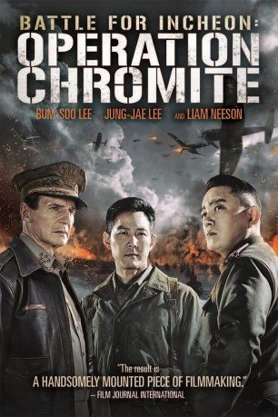

#5337 Operation Chromite
 
 IMDB-Wertung: 6.5 / 10
IMDB-Wertung: 6.5 / 10  Tomatometer: 33
Tomatometer: 33  Metascore: 0
Metascore: 0 
Der hoch dekorierte amerikanische General Douglas MacArthur ist fest entschlossen, den Koreakrieg zu entscheiden. In einem Himmelfahrtskommando schickt er acht bestens ausgebildete koreanische Agenten unter der Führung des Marineleutnants Jang los, um hinter den Feindeslinien in Nordkorea die Operation Chromite durchzuführen. Nur wenn sie erfolgreich sind, wird es den Amerikanern möglich sein, in Incheon zu landen und Truppen in Landesinnere zu schicken.
Jahr: 2016
Dauer: 111 Minuten
FSK: 16
Land: Süd-Korea Studio: CJ EntertainmentTonspuren: DD5.1 - ,
Untertitel: Deutsch,
Auflösung: 1080p (1912x796) Größe: 4249 MB
Genre: Action, Drama, Krieg, Geschichte
Regisseur: John H. Lee
Drehbuch: Jim Kouf
Soundtrack:
Darsteller:
 Jung-jae Lee als Jang, Hak-soo, South Korean Navy Lieutenant
Jung-jae Lee als Jang, Hak-soo, South Korean Navy Lieutenant Liam Neeson als Douglas MacArthur
Liam Neeson als Douglas MacArthur- Matthew D'Arcy als Soldier-Typist
- Sean Dulake als Lt. Col. Edward L. Rowny
- Beom-su Lee als Lim, Gye-jin, North Korean Senior Colonel
Datei: X:\2016(N-Z)\Operation Chromite (2016, FSK16, 1912x796).mkv seit 16.01.2017
Festplatte: HD 2016(A-Z)
 Es gibt insgesamt 182 Filme in der Gruppe '2016(N-Z)'
Es gibt insgesamt 182 Filme in der Gruppe '2016(N-Z)'